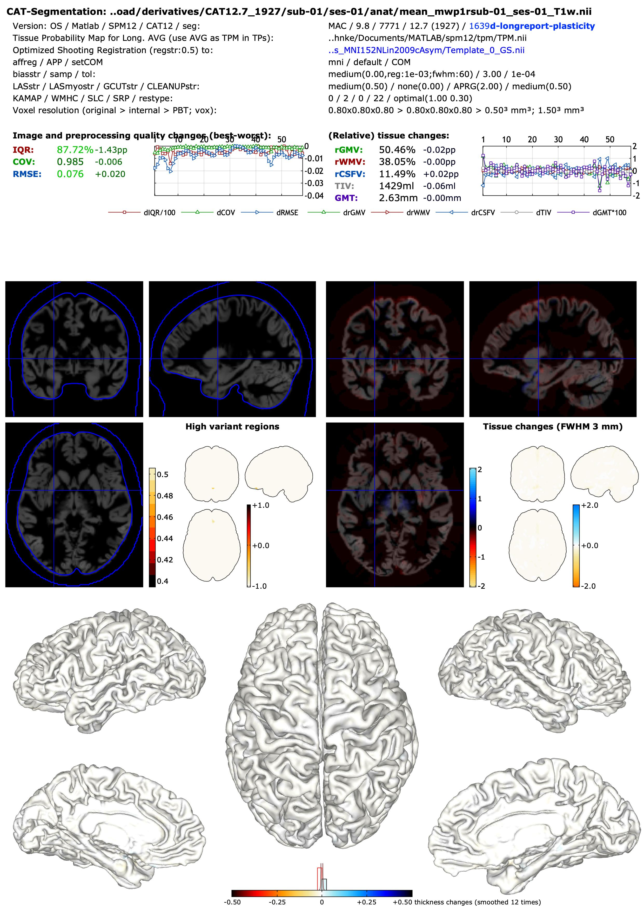
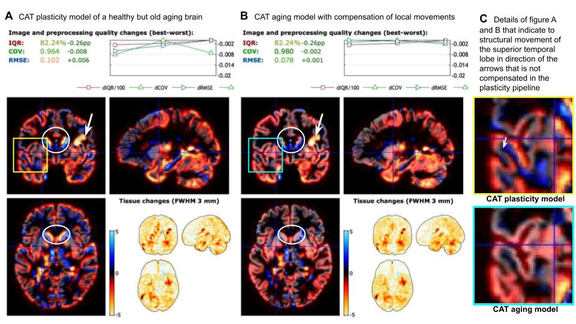
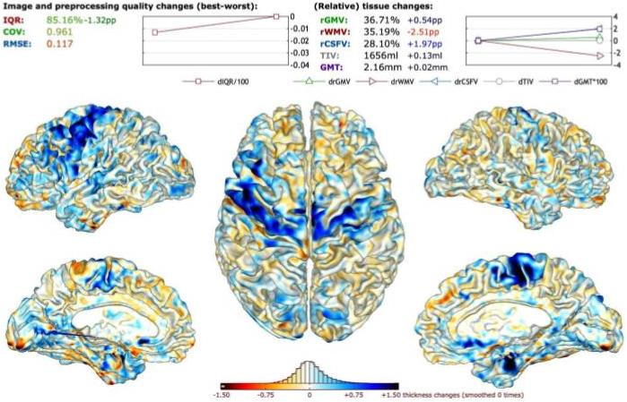

Catlongreport
Although the cat_long_report (Figure 1) looks quite similar to the scan-specific report there are some special aspects. The report is produced for each aging model that results in different volumes but the same surfaces. The parameters describe the tissue probability map (TPM) used for the average case and only mark the use of the individual TPM.

Figure 1 - Full report: Shown is the CAT long report of the 28andMe dataset (Pritschet et al., 2021) with only small variance in terms of image quality and structural changes of daily scans over two months with strict quality control.
The Image and preprocessing quality section focuses on the best image quality rating (IQR) values and its worst deviation in percent points (pp), which indicate potential problems (e.g., less than -4pp) such as movement artifacts or lower resolution that often lead to GM underestimation (see also Figure 2). In addition, the covariance (COV) and the root mean square error (RMSE) error are estimated between the normalized tissue maps. In contrast to IQR, COV and RMSE can be biased by structural changes. The values of COV and RMSE are color-coded similarly to IQR, with the best COV being 0.98 (100%, A+) and the worst 0.88 (0%, F), i.e., a COV of 0.93 corresponds to the worst regular score (50%, E-/F). For the RMSE, the scaling is defined between 0.05 (best-case, 100%, A+) and 0.15 (worst-case, 0%, F).
The (Relative) tissue changes section contains the global mean values of the relative gray matter volume (rGMV), relative white matter volume (rWMV), and relative cerebrospinal fluid volume (rCSFV) defined for the total intracranial volume, and their changes in pp. In case of thickness estimation, the mean changes are also presented here as absolute values in millimeters (mm).
There are two volume plots, the first is experimental and shows regions with large changes that indicate problematic regions (e.g., problems due to skull stripping or WMHs), while the second shows the relative changes in GM, WM, or CSF, with red values indicating atrophy and blue values indicating growth. Both volume charts also include a small glass brain figure in the lower right corner. The changes shown may be due to real anatomical changes (the desired outcome), but also to differences due to (i) MR protocol and image quality, (ii) inaccurate pre-processing, and (iii) the longitudinal modeling (plasticity vs. aging).
You access the longitudinal report cat_long_report via SPM batch mode.
We selected 2 examples from ADNI to illustrate some observations. The first example shows real aging effects, while the second focuses on scanner effects.
 Figure 1 - Aging effects: Shown are the tissue changes in an ADNI subject after one and two years, processed with the CAT plasticity (A) and CAT aging pipeline (B) with default settings. In the plasticity model, some gyri show strong local increase and decrease of tissue volume (yellow and cyan boxes with detailed view in subfigure C) that link to local movement of structures (moving from the decreased to the increased area) rather than real tissue changes and where compensated by an additional inter time point deformation in the aging model. You can also see a general shrinkage of the brain and the enlargement of the ventricles near the basal ganglia (white circles) and some pre-processing problems with strong local GM atrophy due to uncorrected white matter hyperintensities (white arrows) and blood vessel (green arrows). As atypical GM regions are affected, this has negligible impact on common VBM analyses.
 Figure 2 - Scanner effects: In ADNI some subjects were additionally scan on 1.5 and 3.0 Tesla systems that allows testing for scanner-specific differences although there were about 100 days between the scans. In this case, the differences in terms of image quality are much higher although ADNI did a lot to reduce scanner effects. The lower image contrast and higher noise of the 1.5 Tesla makes it harder to correctly segment myelinated GM regions that have higher more white matter like intensities. In this example, the first scan was performed with a 1.5 Tesla scanner and the second with a 3.0 Tesla device, showing a global and local increase in GM thickness rather than the expected decrease, especially in myelinated regions.